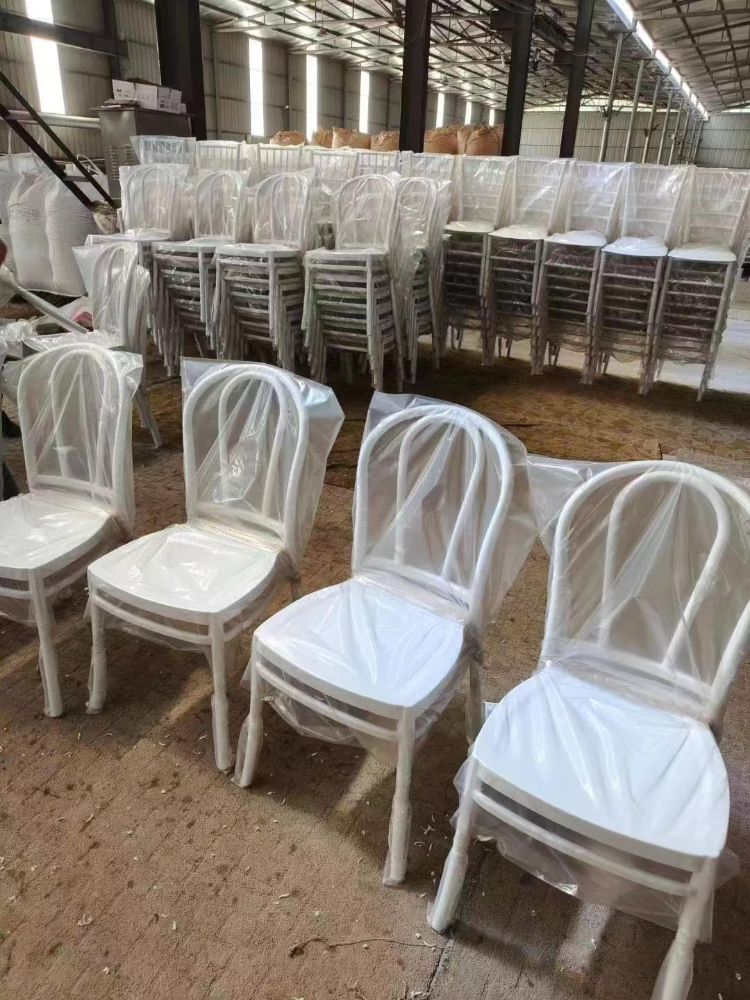
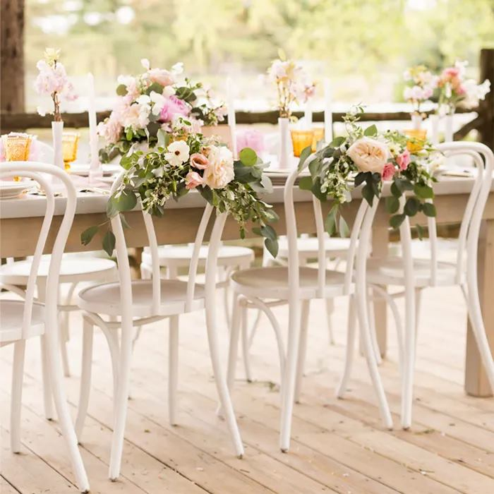
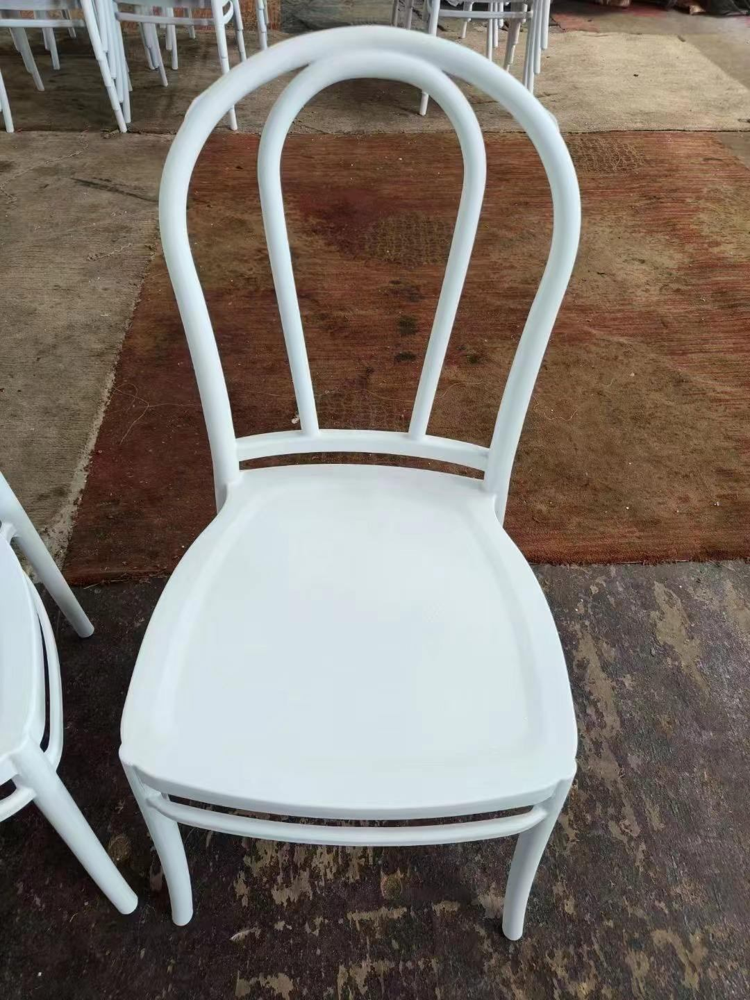

Tables
wedding chairs
Wedding Chairs: Elevate Your Special Day with the Perfect Seating Choice When planning your dream wedding, every detail counts—from the venue to the decor to the seating arrangements. Wedding chairs play a crucial role in creating an inviting atmosphere for your guests. With a variety of styles and options available, choosing the right wedding chairs...
| Application | Hotel, banquet, wedding, restaurant and event project use |
|---|---|
| Customization | Color, finish, packing and quantity can be discussed by project. |
Product Details
Project Supply Information
Share quantity, destination, color, frame finish and packing requirement to receive a project quotation.
Wedding Chairs: Elevate Your Special Day with the Perfect Seating Choice When planning your dream wedding, every detail counts—from the venue to the decor to the seating arrangements. Wedding chairs play a crucial role in creating an inviting atmosphere for your guests. With a variety of styles and options available, choosing the right wedding chairs can transform your celebration. Types of Wedding Chairs Chiavari Chairs - Elegant and versatile, Chiavari chairs are a popular choice for weddings. Available in various finishes such as gold, silver, and wood, they complement a range of decor themes. Banquet Chairs - Ideal for large receptions, banquet chairs provide comfort without sacrificing style. Their padded seats and backs ensure your guests enjoy the festivities throughout the night. Lounge Seating - For a modern twist, consider lounge seating options. Sofas and chic armchairs can create cozy areas for guests to relax and socialize during your ceremony or reception. Farmhouse Chairs - Bring a rustic charm to your wedding with farmhouse chairs. These wooden chairs are perfect for outdoor venues or country-themed celebrations. Ghost Chairs - Make a statement with ghost chairs, made from transparent acrylic. They blend seamlessly with any decor while providing a contemporary flair. Choosing the Right Chairs for Your Wedding Theme Alignment - Select chairs that reflect your wedding theme—be it classic, rustic, vintage, or modern. Comfort - Ensure your guests will be comfortable during the ceremony and reception. Look for options with cushions or ergonomic designs. Color Coordination - Choose chair colors that complement your bridal palette. Consider chair covers or sashes for an added pop of color. Budget Considerations - Set a budget for your wedding chair rental or purchase. Don’t forget to factor in delivery and setup costs. Benefits of Renting Wedding Chairs Cost-Effective - Renting wedding chairs can save you money compared to purchasing and storing chairs post-wedding. Variety - Rentals provide access to a wide range of styles and colors, allowing you to easily match your vision. Convenience - Professional rental companies handle delivery, setup, and pickup, allowing you to focus on enjoying your special day. The right wedding chairs can enhance the beauty of your ceremony and reception while ensuring guest comfort. Take the time to explore various options and select chairs that not only fit your style but also complement your overall wedding theme. Elevate your special day with wedding chairs that reflect your love story, creating unforgettable memories for you and your guests. By integrating essential keywords and focusing on user experience, this content is optimized for Google indexing and more appealing to potential customers